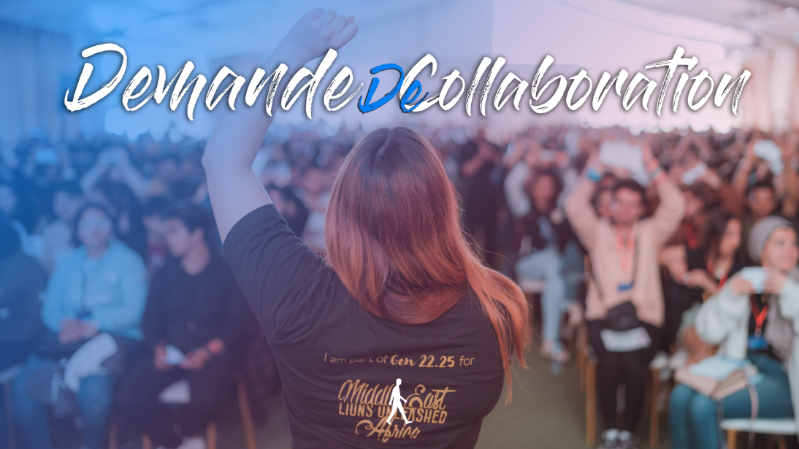

AIESEC est une organisation internationale, apolitique, indépendante et à but non lucratif, entièrement gérée par des étudiants . Elle est la plus grande organisation estudiantine dans le monde permettant aux jeunes de développer leur potentiel.
Le Comité d'organisation de la Conférence ULDS 2K24 (University Leadership Development
Conference) de l'AIESEC University sollicite respectueusement votre bienveillance envers les
initiatives de notre association et propose une collaboration visant à mutuellement bénéficier
des activités des deux parties.
En tant que la plus grande organisation étudiante mondiale En effet, ULDS 2K24 constitue une conférence annuelle orchestrée par AIESEC University. Prévue aux dates du 17, 18 et 19 Février, cette rencontre réunira environ 200 futurs leaders. L'objectif principal de l'événement est de renforcer leurs compétences tant personnelles que professionnelles, tout en les informant sur la culture, les missions et les valeurs fondamentales d'AIESEC.
La conférence ULDS 2K24 comprendra:
- Sessions et Ateliers.
- Special event.
- Date de L'événement : 17,18 et 19 Février.
- Nombre de participants: 200 personnes.
- Nombre de pause-café : 11.
Par ailleurs, nous souhaitons vous offrir la possibilité d'exposer vos produits et de promouvoir votre marque en installant un stand lors de la conférence. Cette initiative vous offrira une visibilité exceptionnelle auprès d'une audience diversifiée et dynamique, vous permettant ainsi de maximiser les avantages de votre participation Nous espérons que vous serez sensibles à notre demande et pourrez contribuer au développement de nos activités. Dans l’attente de votre réponse, que nous souhaitons favorable, veuillez Monsieur, acceptez nos remerciements et nos salutations les plus distingués.
En tant que la plus grande organisation étudiante mondiale En effet, ULDS 2K24 constitue une conférence annuelle orchestrée par AIESEC University. Prévue aux dates du 17, 18 et 19 Février, cette rencontre réunira environ 200 futurs leaders. L'objectif principal de l'événement est de renforcer leurs compétences tant personnelles que professionnelles, tout en les informant sur la culture, les missions et les valeurs fondamentales d'AIESEC.
La conférence ULDS 2K24 comprendra:
- Sessions et Ateliers.
- Special event.
- Date de L'événement : 17,18 et 19 Février.
- Nombre de participants: 200 personnes.
- Nombre de pause-café : 11.
Par ailleurs, nous souhaitons vous offrir la possibilité d'exposer vos produits et de promouvoir votre marque en installant un stand lors de la conférence. Cette initiative vous offrira une visibilité exceptionnelle auprès d'une audience diversifiée et dynamique, vous permettant ainsi de maximiser les avantages de votre participation Nous espérons que vous serez sensibles à notre demande et pourrez contribuer au développement de nos activités. Dans l’attente de votre réponse, que nous souhaitons favorable, veuillez Monsieur, acceptez nos remerciements et nos salutations les plus distingués.

Mahmoud Ben Aammar
+216 55 800 606
président du comité d'organisation
+216 55 800 606
président du comité d'organisation
Ahmed Abdellaoui
+216 25 582 040
Vice président des logistiques du comité d'organisation
+216 25 582 040
Vice président des logistiques du comité d'organisation